Translate client drawings and artistic proportions into engineering requirements.
Structural Design · Fabrication · Public Installation
Creek Show Dragonflies
Translated artist concepts into four illuminated steel sculptures engineered, fabricated, wired, and installed over a live urban creek.
Mechanical Engineering Intern · Waterloo Greenway Conservancy · May 2022–Jan 2023 · Austin, TX
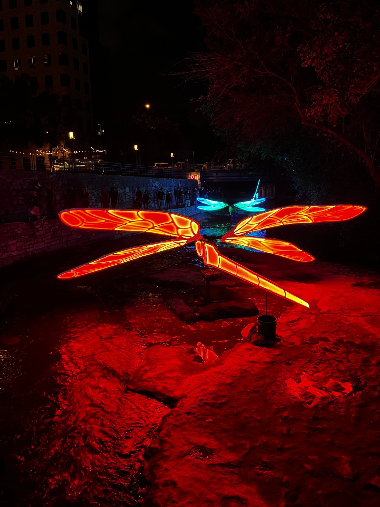
4Unique sculptures
14+ ftWingspan
200+Welded joints
−30%Peak current force
01
From artwork to structure
The artwork had to retain the artist's visual intent while becoming a manufacturable structure with distinct wing geometry, internal masts, mounting interfaces, lighting, and serviceable electronics. Four dragonflies were built, and each one carries its own unique wing design rather than a single repeated pattern.
Develop four complete SolidWorks assemblies and creek-bed mounting structures.
Iterate geometry and assembly details before committing to full-scale fabrication.
02
Modeling, Prototyping & Manufacturing
Each sculpture moved from CAD to welded steel: individual wings were modeled in SolidWorks, cut, and welded into rib frames, then finished and painted. Small-scale prototypes let the artists react to real geometry before committing to full-size fabrication.
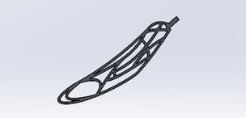
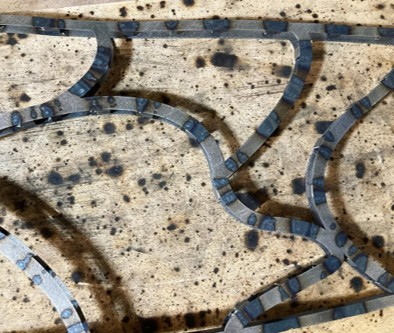
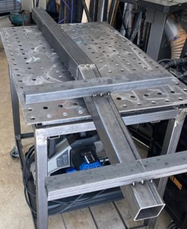
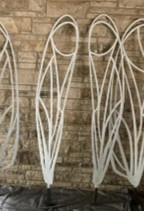
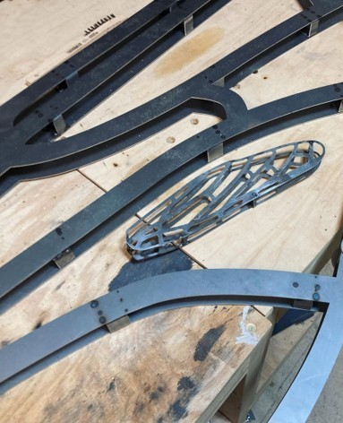
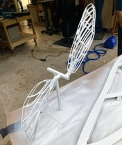
To validate the sculptures against wind, I built a simplified CAD assembly of one dragonfly for wind-resistance simulation. In the field the wings and body carry covers, so the simulation model is intentionally left undetailed. It captures the loaded profile without the geometry that does not drive the aerodynamic result.
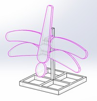
03
Onsite + Assembly
Sitting in a live creek turned wind, current, and flash flooding into hard design constraints. A sculpture that tipped or washed away would be destroyed, so I built the CAD models specifically to test each dragonfly against wind and water loading before anything went in the water. Every dragonfly also needed a full set of wings with covers that diffused the light, and those covers could not be allowed to turn each wing into a sail.
The stability answer was mechanical. I widened the base frame and distributed sandbags evenly across the whole base so no single point could lift or pivot under a gust or a surge. The wing covers were the harder problem. The original plan used a light-diffusing plastic, but I switched to a tough, breathable white fabric that still spreads the LED light while letting wind and water pass through it. Choosing that fabric meant balancing four things at once: it had to be durable, breathable, diffuse the light evenly, and shed enough current and wind force to keep the structure planted.
Wind, current, and flood
Tested each dragonfly in CAD against wind and creek-current loading, including the flash-flood conditions the creek can produce.
Wider base, uniform ballast
Widened the base frame and spread sandbags evenly across it so nothing could lift or pivot under load.
−30% peak current force
Breathable fabric covers and a reworked creek-facing frame let wind and water pass through, cutting peak current-induced load by 30%.
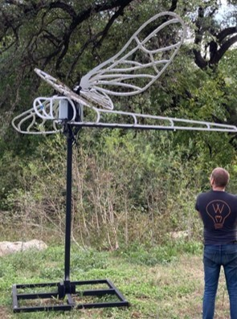
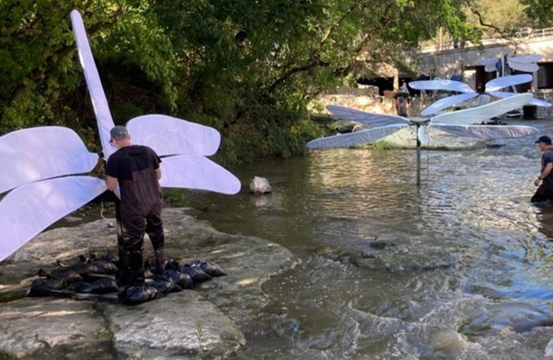
04
Final Product
Lit at night, the four dragonflies read as the artwork the artists intended, while carrying the structure, mounts, and protected electronics engineered underneath.
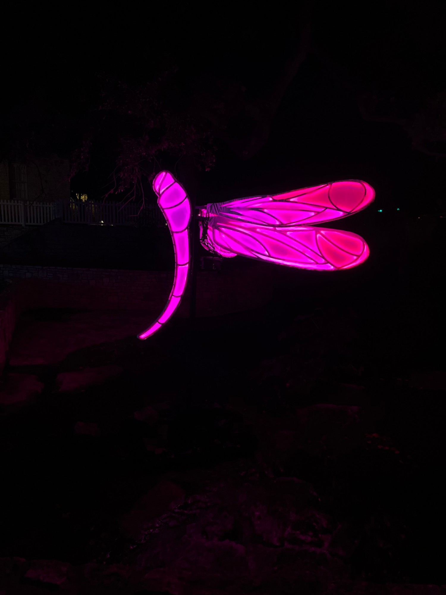
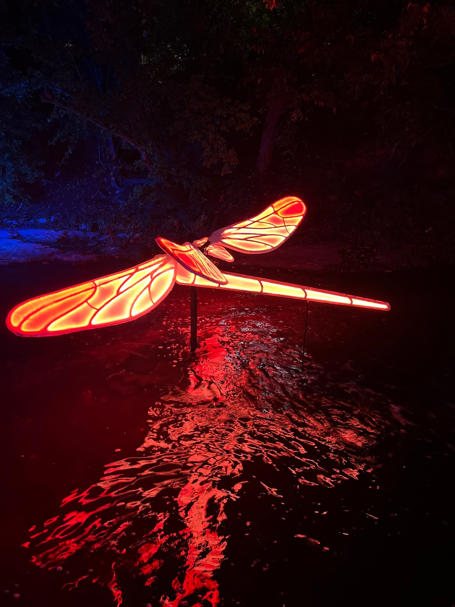
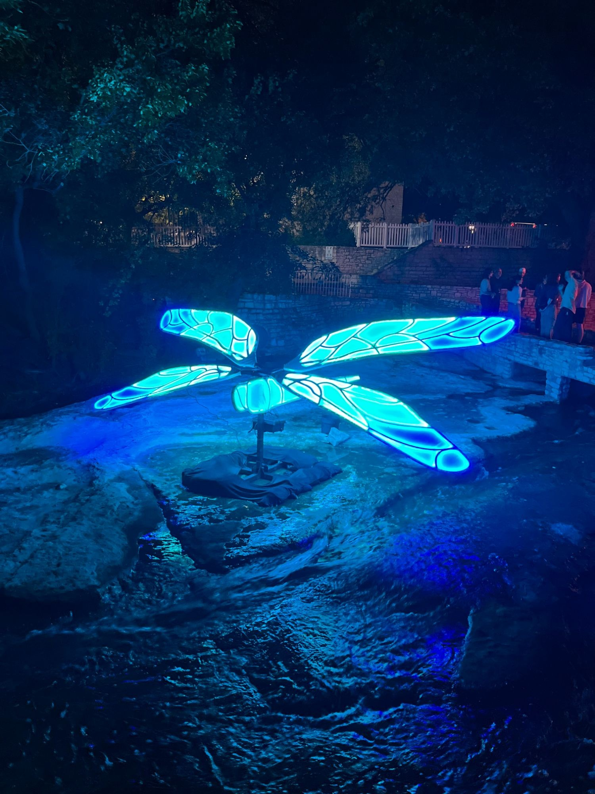
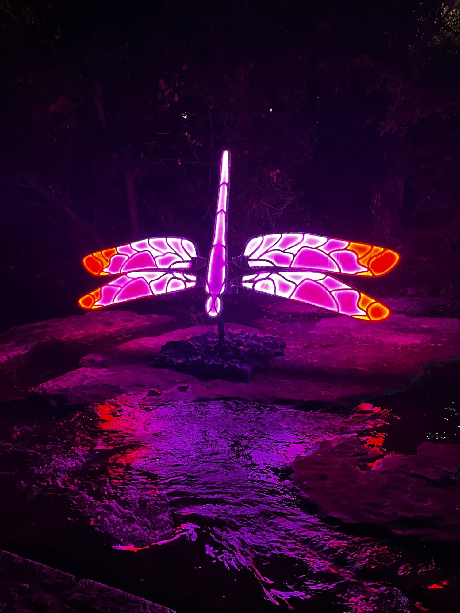
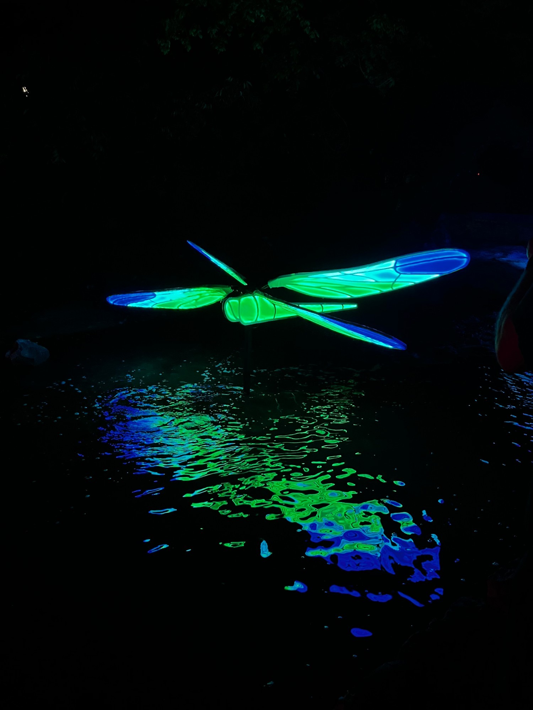
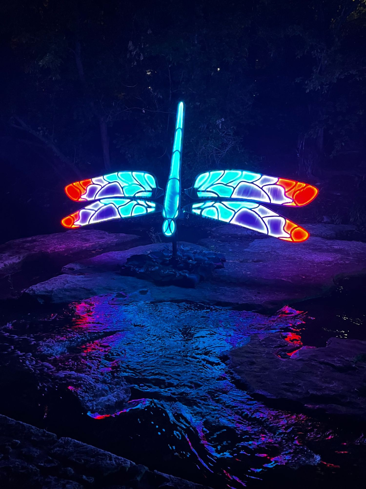
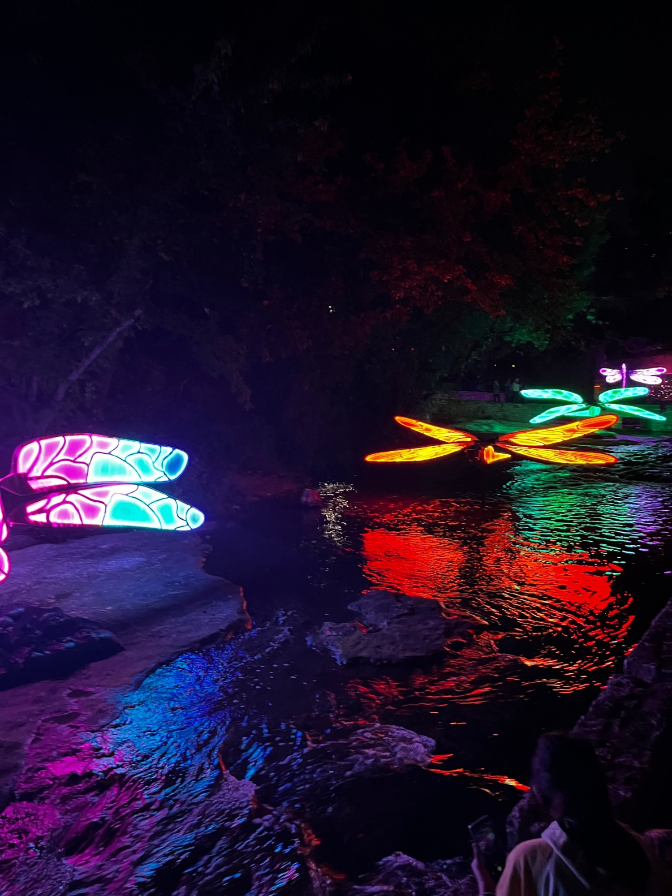
Full show run completed
All four dragonflies operated throughout Creek Show, turning a set of artistic concepts into reliable public infrastructure seen by thousands of visitors.